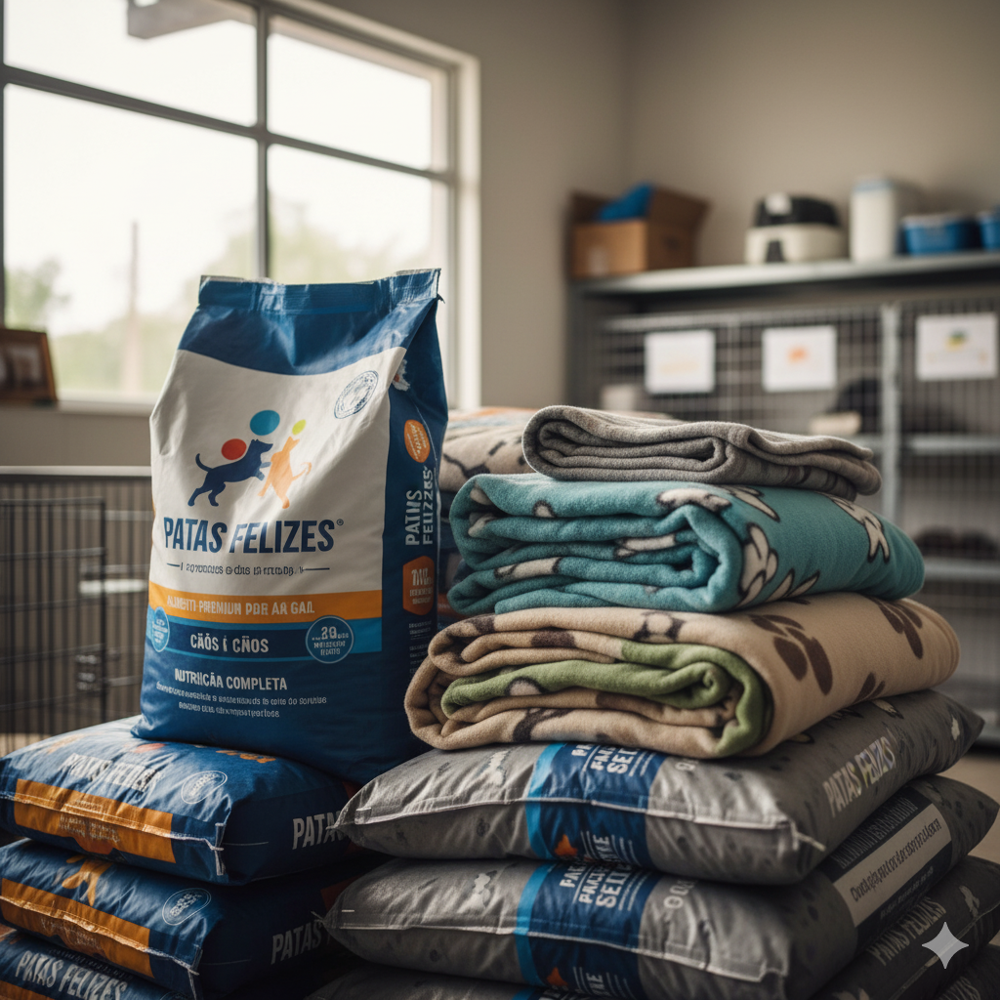

Faça a Diferença. Junte-se a um Projeto.
Nossos projetos focam em resgate, reabilitação e bem-estar de cães e gatos de rua. Sua ajuda é fundamental para cada patinha que salvamos.
Ver Nossos ProjetosTrês Pilares da Nossa Ação
Clique abaixo para saber como você pode ser um Anjo de Quatro Patas.
🐶 Mais de 500 Vidas Salvas
Graças à comunidade e aos voluntários, resgatamos, tratamos e encontramos um lar para mais de 500 animais nos últimos 5 anos.
💰 Fundo de Saúde Animal
Mantemos um fundo ativo para custear cirurgias de emergência e vacinação de filhotes resgatados.
🤝 Seu Tempo Vale Ouro
Voluntários dedicados ajudam na socialização, passeios e cuidados diários. Não há projeto sem você!
1. Projeto Adoção Responsável
Nosso maior objetivo é encontrar lares seguros e amorosos. O processo de adoção é rigoroso e envolve entrevista, visita domiciliar e acompanhamento pós-adoção.
- Passo 1: Conheça os animais disponíveis em nossa galeria.
- Passo 2: Preencha o formulário de pré-adoção no link abaixo.
- Passo 3: Receba a visita da nossa equipe para avaliação.

2. Campanha Permanente de Doações
Cada centavo, cada quilo de ração e cada cobertor faz a diferença na vida dos nossos resgatados. Temos várias formas de você contribuir:
- Doação Financeira: Via PIX ou Boleto (para cobrir custos veterinários).
- Doação de Itens: Ração, medicamentos, jornais, coleiras e caminhas.
- Apadrinhamento: Ajude a cobrir os custos fixos de um animal específico.

3. Voluntariado e Resgate
O voluntário é o coração da ONG. Você pode nos ajudar com tarefas operacionais, administrativas ou especializadas. Veja as principais frentes:
- Cuidados Diários: Alimentar, limpar canis e socializar os animais.
- Eventos: Organizar feiras de adoção e campanhas de arrecadação.
- Logística: Ajudar no transporte de animais para o veterinário ou resgates.